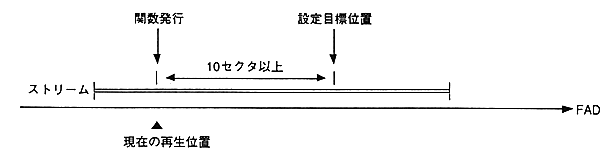

Function | Function name |
|---|---|
Open stream by file identifier | STM_OpenFid |
Open stream with playback range | STM_OpenFrange |
Open Resident Stream | STM_OpenResi |
Close stream | STM_Close |
Set stream key | STM_SetKey |
Connect aperture and CD buffer section | STM_ConnectCdbuf |